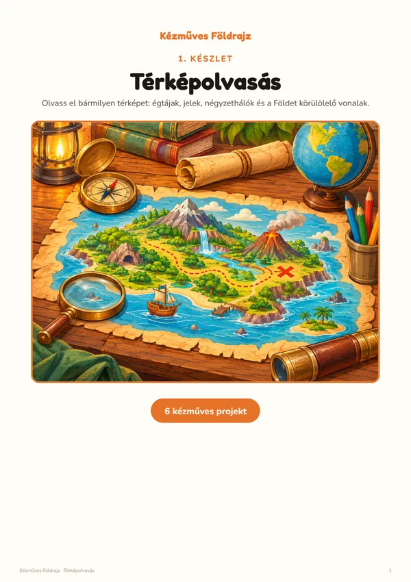
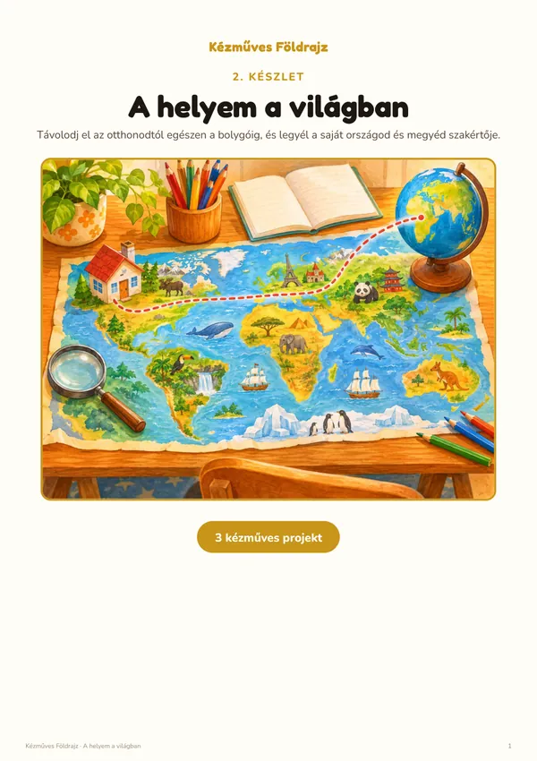
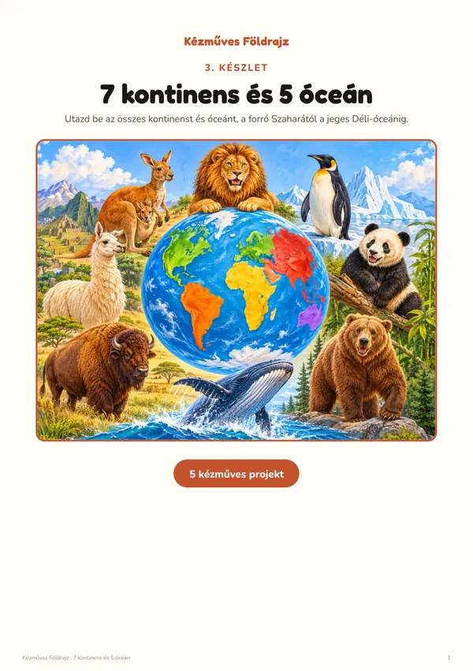
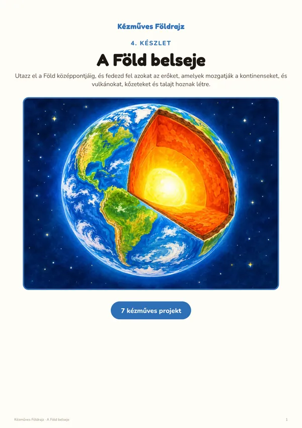
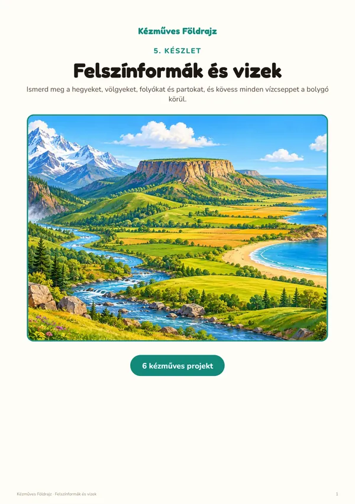
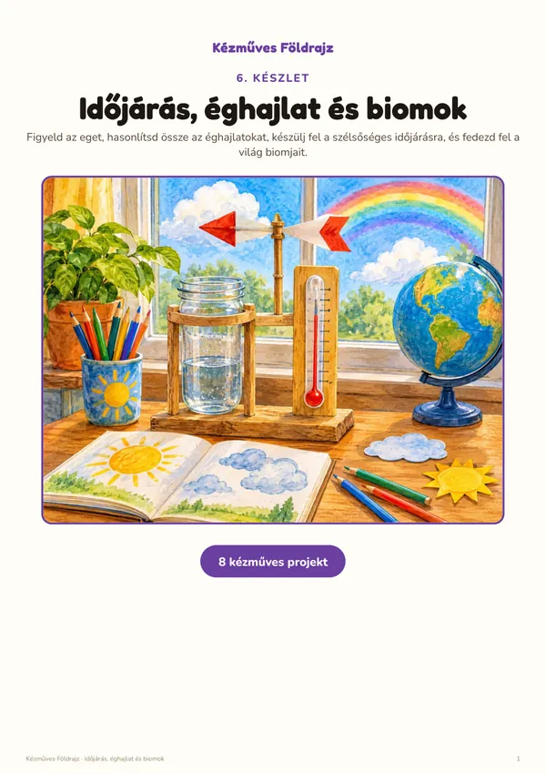
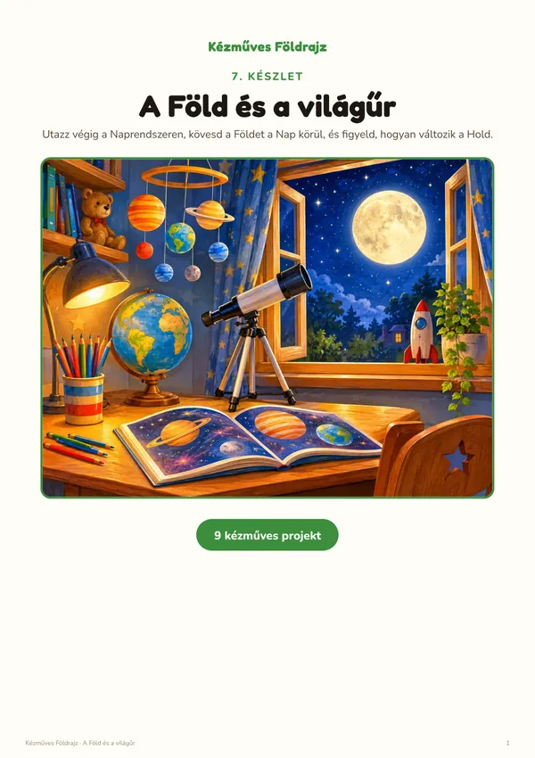
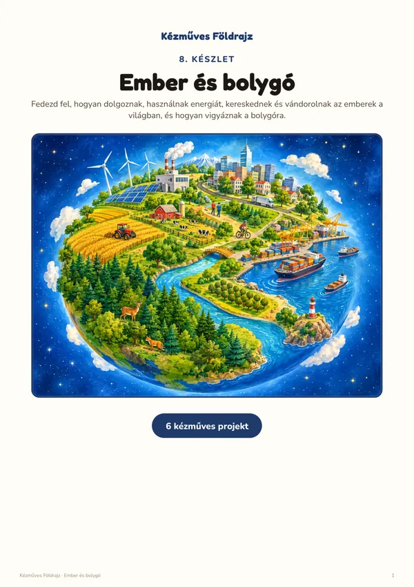

🌍
Ajándék
▶ Játék indításaVilág körüli utazás
Földrajzi játék iskolai és otthoni használatra, számítógépen, tableten vagy telefonon. 6 kategória: országok és fővárosok, a világ nyelvei, folyók és óceánok, hegységek, híres látnivalók, kultúra és érdekességek.

2. készlet
A helyem a világban
17 oldal ⬇ Letöltés · színes⬇ Letöltés · színezhetőmegnyitás a böngészőben
3. készlet
7 kontinens és 5 óceán
22 oldal ⬇ Letöltés · színes⬇ Letöltés · színezhetőmegnyitás a böngészőben

5. készlet
Felszínformák és vizek
25 oldal ⬇ Letöltés · színes⬇ Letöltés · színezhetőmegnyitás a böngészőben
6. készlet
Időjárás, éghajlat és biomok
28 oldal ⬇ Letöltés · színes⬇ Letöltés · színezhetőmegnyitás a böngészőben
7. készlet
A Föld és a világűr
32 oldal ⬇ Letöltés · színes⬇ Letöltés · színezhetőmegnyitás a böngészőben
Tipp a nyomtatáshoz
A4-es lapra nyomtass. A 3D makettekhez vastagabb papír (160–200 g/m²) a legjobb, de sima papírral is működnek.
Következő lépés
Kezdd az 1. készlettel vagy azzal a témával, amelyet most tanítasz. Minden készlet elején van egy útmutató a tanárnak.